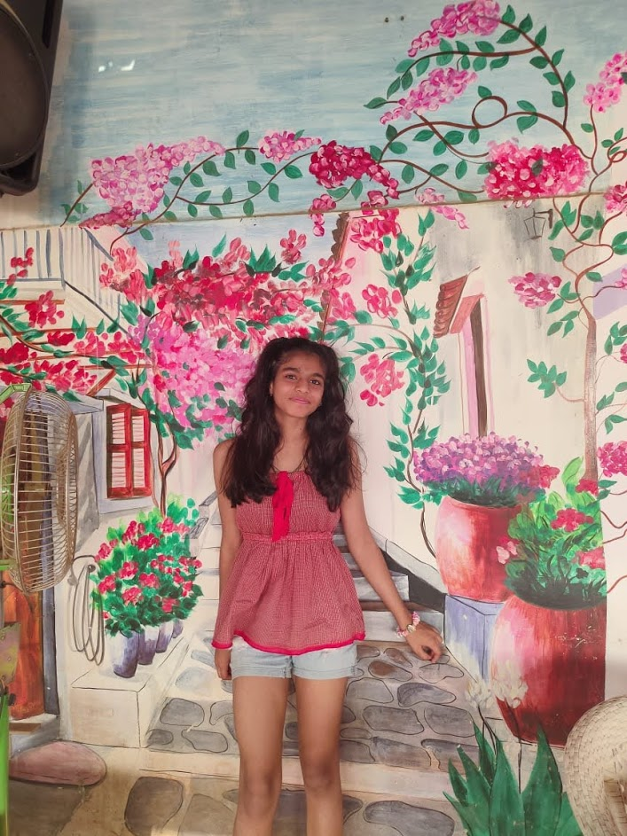

Valley-of-flowers-uttrakhand
Valley of Flowers National Park is an Indian national park, located in North Chamoli and Pithoragarh, in the state of Uttarakhand and is known for its meadows of endemic alpine flowers and the variety of flora.

Velas Maharashtra
Velas is a village in Ratnagiri district of Maharashtra. It is noted as a birthplace of Nana Phadnis.He was sachiva- a secretary in Peshawai in Pune. It is also famous for its beaches and turtle festival which is held by the local people of Velas and Sahyadri Nisarg Mitra, Chiploon.

Sanddunes-Jaisalmer
The Yumthang Valley or Sikkim Valley of Flowers sanctuary, is a nature sanctuary with river, hot springs, yaks and grazing pasture on rolling meadows surrounded by the Himalayan mountains in the North Sikkim district of Sikkim state in India
Ziro Valley
It is famous for its surrounding pine-clad gentle hills and its rice fields. Ziro is home to the Apatani tribe. The lush greenery with clear blue skies makes the entire place look picturesque and magical. Spotting bird and animals is sure to excite anyone who visits Ziro. Another ideal time to visit Ziro is in Early Winters from October to November when the valley is enveloped in snow.
About Us

Why i decided to build this website and who i am !
Travel.ind
Hi! im taisha karsiya, a 13 year old from mumbai.we've always been taught about indias beautiful culture- its food, diversity,clothes and languages but there is so much more to my amazing country than that. i decided to build a website that would showcase the more nature inclined/non cultural part of india. its breathtaking waterfaals and fields,the beaches and even the sandunes. enjoy!